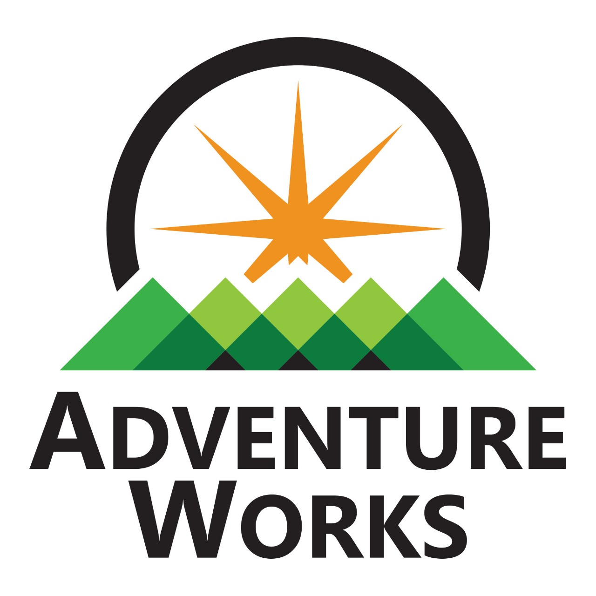

A structured SQL-based project to analyze the Indian General Elections 2024. The project involves
writing and executing queries to evaluate seat distribution, alliance performance, candidate
data, and more.
Regional Sales EDA (2014–2018) is a data analytics project that explores Acme Co.'s historical
sales across U.S. regions, customers, products, and channels. Multiple Excel sheets were merged
using SQL-style joins in Pandas to create a unified dataset for analysis.
Chocolate Sales EDA is a data analysis project focused on uncovering key business insights from a
chocolate sales dataset. The analysis highlights product performance, customer behavior,
seasonal patterns, and regional sales trends through exploratory data analysis.
This interactive Power BI dashboard provides a comprehensive view of mobile sales performance. It
tracks key metrics such as revenue, profit, and quantity sold, offering insights into brand-wise
performance, product trends, and regional sales distribution.
An interactive Power BI dashboard that highlights the top 7 performing categories or entities
based on selected metrics. This project demonstrates the use of visuals, KPIs, and DAX to
communicate data-driven insights effectively.

This project showcases an interactive sales dashboard built in Microsoft Excel using the
Adventure Works dataset. The goal was to analyze and visualize sales data across different
product categories, regions, customer segments, and time periods to support better business
decision-making.